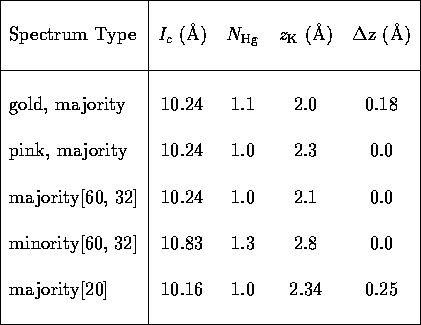
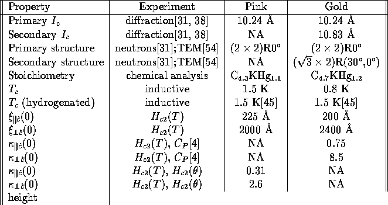
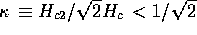
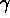

Table I: Parameters obtained from fits to
C4KHg neutron and x-ray diffraction data. N
Hg is the number of Hg atoms per 4 carbon atoms;
zK is the distance between the potassium layers
and the center of the intercalant sandwich; and
deltaz is the separation of the Hg layers.

Table II: A summary of the known
differences between the pink and gold C4KHg
samples. The numbers here are for a typical sample of a given
type, although some variation is observed. 
indicates type I superconductivity.[55] Hc was determined
from  for the gold specimens, and from the
Hc2(theta) measurements for the pink
specimens. is the superconducting coherence length.
NA means not applicable.